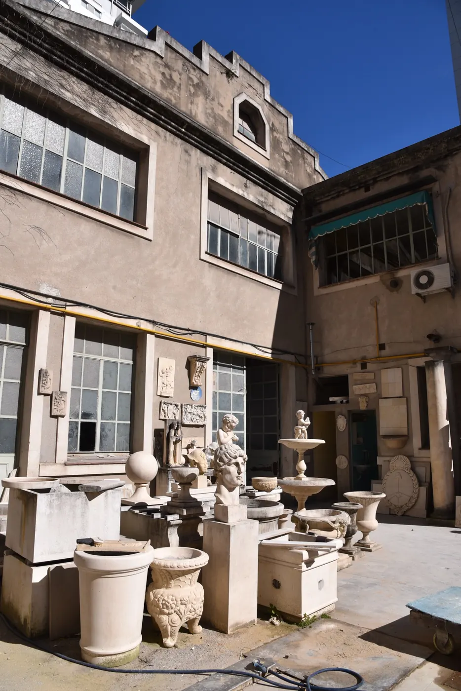
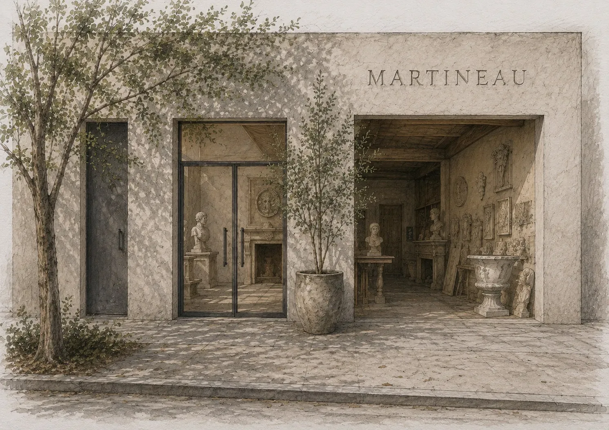
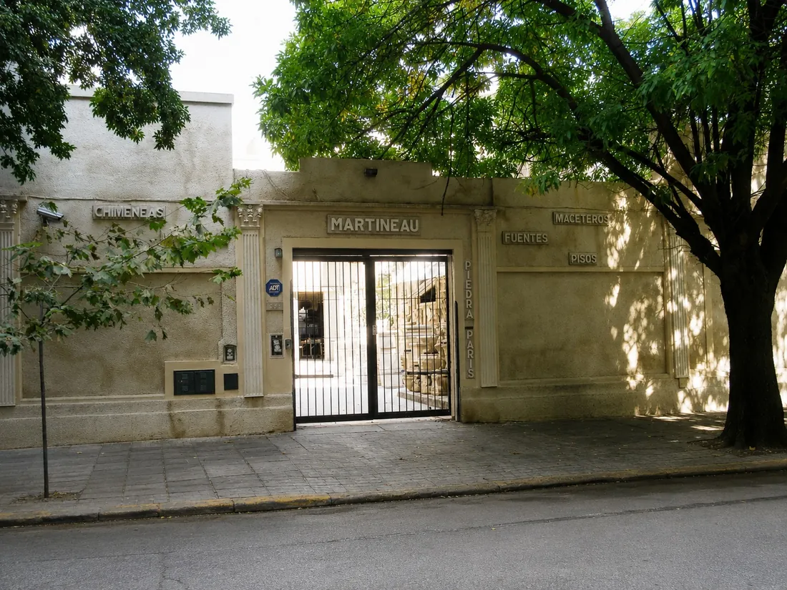
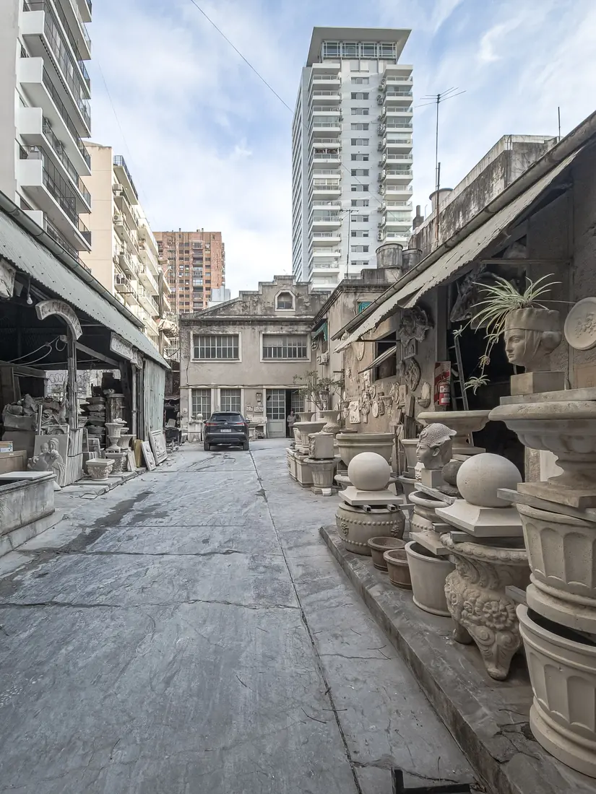
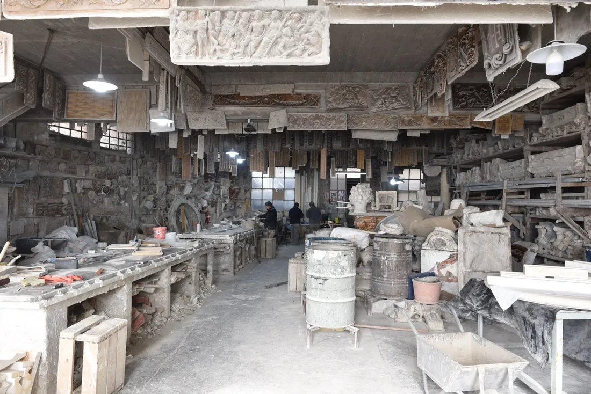

Desde 1922, creando piezas únicas de piedra reconstituida y yeso para los mejores arquitectos y decoradores del mundo.
Fundada por Agustín Martineau, somos una empresa líder en la fabricación de productos tipo piedra París: frentes de chimeneas, ménsulas, maceteros, jardineras, pisos, escaleras según planos, bordes de piletas y mucho más.
También elaboramos productos en yeso para interiores. La empresa ha trabajado —y trabaja— con los mejores arquitectos y decoradores no solo de la Argentina, sino también de Brasil, Uruguay y Estados Unidos.
Todo esto gracias a la excelencia de nuestros productos, hechos en moldes y terminados a mano. Todas las piezas de piedra pueden usarse en exterior bajo cualquier clima, así como en interior. En exteriores, la piedra desarrolla con el tiempo una atrayente pátina natural.
Ubicada en el corazón de Las Cañitas, cerca del hipódromo y las canchas de polo, la Casa Martineau cuenta con estacionamiento propio para sus clientes.

Las piezas están hechas para durar toda una vida.
Cien años de moldes, diseños y copias de la antigüedad clásica conviven en un taller que sigue produciendo cada pieza a mano. Este boceto muestra el proyecto de la nueva sede.

El taller histórico



Santos Dumont 4457
Chacarita, CABA — Argentina
Lunes a Viernes, 09:00 — 18:00
El auge económico que llevó a la Argentina a ocupar un lugar entre los 7 países más ricos del mundo entre 1900 y 1930, produjo una explosión en la construcción de edificios públicos y privados, que pronto convirtieron a la «gran aldea» en una metrópolis europea.
Atraídos por la magnitud y la cantidad de los emprendimientos, artistas, arquitectos y artesanos europeos instalaron sus talleres en Buenos Aires para dar abasto al ininterrumpido flujo de encargos de gran importancia.
Uno de ellos, el francés A. Martineau, instaló en 1922 un taller de moldeado, diseño y producción de elementos arquitectónicos, decorativos y esculturas. Su trabajo lo convirtió rápidamente en el proveedor de los principales estudios de arquitectura de Argentina, gracias a la cuidada calidad de los materiales empleados y el exquisito acabado de su artesanía.
El juicioso manejo económico de la empresa, y la acumulación de diseños y moldes de los mejores arquitectos, y copias de obras de la antigüedad clásica, han convertido al taller de Martineau en un verdadero museo, como lo calificó una revista especializada de Brasil.
Tres obras ilustran la envergadura y calidad de la firma: la Basílica de San Nicolás de Bari, la residencia Ivry en los alrededores de Buenos Aires y la Catedral de La Plata.
El deseo de la empresa es poner su capacidad técnica y artesanal —casi única en la sociedad industrializada contemporánea— al servicio de decoradores, arquitectos y particulares de todo el mundo, para que puedan apreciar y encargar la vasta cantidad de productos que pueden ejecutarse en nuestros talleres.
Excelente terminación y calidad de los productos. Las piezas de piedra pueden ser usadas en el exterior bajo cualquier clima.
Navegando por internet encontré esta empresa que me aconsejó en el tipo de producto. No tengo otra cosa que palabras de agradecimiento por el asesoramiento.
Santos Dumont 4457
Chacarita, CABA
Argentina
Lunes a Viernes
09:00 — 18:00